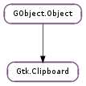

| static | get(selection) |
| static | get_for_display(display, selection) |
| clear() | |
| get_display() | |
| get_owner() | |
| request_contents(target, callback, *user_data) | |
| request_image(callback, *user_data) | |
| request_rich_text(buffer, callback, *user_data) | |
| request_targets(callback, *user_data) | |
| request_text(callback, *user_data) | |
| request_uris(callback, *user_data) | |
| set_can_store(targets) | |
| set_image(pixbuf) | |
| set_text(text, len) | |
| store() | |
| wait_for_contents(target) | |
| wait_for_image() | |
| wait_for_rich_text(buffer) | |
| wait_for_targets() | |
| wait_for_text() | |
| wait_for_uris() | |
| wait_is_image_available() | |
| wait_is_rich_text_available(buffer) | |
| wait_is_target_available(target) | |
| wait_is_text_available() | |
| wait_is_uris_available() |
None
| Name | Parameters | Return | Description |
|---|---|---|---|
| owner-change | Gdk.Event | The ::owner-change signal is emitted when GTK+ receives an event that indicates that the ownership of the selection associated with clipboard has changed. |
Bases: GObject.Object
The Gtk.Clipboard object represents a clipboard of data shared between different processes or between different widgets in the same process. Each clipboard is identified by a name encoded as a Gdk.Atom. (Conversion to and from strings can be done with Gdk.Atom.intern () and Gdk.Atom.name ().) The default clipboard corresponds to the “CLIPBOARD” atom; another commonly used clipboard is the “PRIMARY” clipboard, which, in X, traditionally contains the currently selected text.
To support having a number of different formats on the clipboard at the same time, the clipboard mechanism allows providing callbacks instead of the actual data. When you set the contents of the clipboard, you can either supply the data directly (via functions like Gtk.Clipboard.set_text ()), or you can supply a callback to be called at a later time when the data is needed (via Gtk.Clipboard.set_with_data () or Gtk.Clipboard.set_with_owner ().) Providing a callback also avoids having to make copies of the data when it is not needed.
Gtk.Clipboard.set_with_data () and Gtk.Clipboard.set_with_owner () are quite similar; the choice between the two depends mostly on which is more convenient in a particular situation. The former is most useful when you want to have a blob of data with callbacks to convert it into the various data types that you advertise. When the clear_func you provided is called, you simply free the data blob. The latter is more useful when the contents of clipboard reflect the internal state of a GObject.Object (As an example, for the PRIMARY clipboard, when an entry widget provides the clipboard’s contents the contents are simply the text within the selected region.) If the contents change, the entry widget can call Gtk.Clipboard.set_with_owner () to update the timestamp for clipboard ownership, without having to worry about clear_func being called.
Requesting the data from the clipboard is essentially asynchronous. If the contents of the clipboard are provided within the same process, then a direct function call will be made to retrieve the data, but if they are provided by another process, then the data needs to be retrieved from the other process, which may take some time. To avoid blocking the user interface, the call to request the selection, Gtk.Clipboard.request_contents () takes a callback that will be called when the contents are received (or when the request fails.) If you don’t want to deal with providing a separate callback, you can also use Gtk.Clipboard.wait_for_contents (). What this does is run the GLib main loop recursively waiting for the contents. This can simplify the code flow, but you still have to be aware that other callbacks in your program can be called while this recursive mainloop is running.
Along with the functions to get the clipboard contents as an arbitrary data chunk, there are also functions to retrieve it as text, Gtk.Clipboard.request_text () and Gtk.Clipboard.wait_for_text (). These functions take care of determining which formats are advertised by the clipboard provider, asking for the clipboard in the best available format and converting the results into the UTF-8 encoding. (The standard form for representing strings in GTK+.)
| Parameters: | selection (Gdk.Atom) – a Gdk.Atom which identifies the clipboard to use |
|---|---|
| Returns: | the appropriate clipboard object. If no clipboard already exists, a new one will be created. Once a clipboard object has been created, it is persistent and, since it is owned by GTK+, must not be freed or unreffed. |
| Return type: | Gtk.Clipboard |
Returns the clipboard object for the given selection. See Gtk.Clipboard.get_for_display () for complete details.
| Parameters: |
|
|---|---|
| Returns: | the appropriate clipboard object. If no clipboard already exists, a new one will be created. Once a clipboard object has been created, it is persistent and, since it is owned by GTK+, must not be freed or unrefd. |
| Return type: |
Returns the clipboard object for the given selection. Cut/copy/paste menu items and keyboard shortcuts should use the default clipboard, returned by passing %GDK_SELECTION_CLIPBOARD for selection. (%GDK_NONE is supported as a synonym for GDK_SELECTION_CLIPBOARD for backwards compatibility reasons.) The currently-selected object or text should be provided on the clipboard identified by #GDK_SELECTION_PRIMARY. Cut/copy/paste menu items conceptually copy the contents of the #GDK_SELECTION_PRIMARY clipboard to the default clipboard, i.e. they copy the selection to what the user sees as the clipboard.
(Passing #GDK_NONE is the same as using gdk_atom_intern ("CLIPBOARD", FALSE). See http://www.freedesktop.org/Standards/clipboards-spec for a detailed discussion of the “CLIPBOARD” vs. “PRIMARY” selections under the X window system. On Win32 the #GDK_SELECTION_PRIMARY clipboard is essentially ignored.)
It’s possible to have arbitrary named clipboards; if you do invent new clipboards, you should prefix the selection name with an underscore (because the ICCCM requires that nonstandard atoms are underscore-prefixed), and namespace it as well. For example, if your application called “Foo” has a special-purpose clipboard, you might call it “_FOO_SPECIAL_CLIPBOARD”.
Clears the contents of the clipboard. Generally this should only be called between the time you call Gtk.Clipboard.set_with_owner () or Gtk.Clipboard.set_with_data (), and when the clear_func you supplied is called. Otherwise, the clipboard may be owned by someone else.
| Returns: | the Gdk.Display associated with clipboard |
|---|---|
| Return type: | Gdk.Display |
Gets the Gdk.Display associated with clipboard
| Returns: | the owner of the clipboard, if any; otherwise None. |
|---|---|
| Return type: | GObject.Object |
If the clipboard contents callbacks were set with Gtk.Clipboard.set_with_owner (), and the Gtk.Clipboard.set_with_data () or Gtk.Clipboard.clear () has not subsequently called, returns the owner set by Gtk.Clipboard.set_with_owner ().
| Parameters: |
|
|---|
Requests the contents of clipboard as the given target. When the results of the result are later received the supplied callback will be called.
| Parameters: |
|
|---|
Requests the contents of the clipboard as image. When the image is later received, it will be converted to a GdkPixbuf.Pixbuf, and callback will be called.
The pixbuf parameter to callback will contain the resulting GdkPixbuf.Pixbuf if the request succeeded, or None if it failed. This could happen for various reasons, in particular if the clipboard was empty or if the contents of the clipboard could not be converted into an image.
| Parameters: |
|
|---|
Requests the contents of the clipboard as rich text. When the rich text is later received, callback will be called.
The text parameter to callback will contain the resulting rich text if the request succeeded, or None if it failed. The length parameter will contain text ‘s length. This function can fail for various reasons, in particular if the clipboard was empty or if the contents of the clipboard could not be converted into rich text form.
| Parameters: |
|
|---|
Requests the contents of the clipboard as list of supported targets. When the list is later received, callback will be called.
The targets parameter to callback will contain the resulting targets if the request succeeded, or None if it failed.
| Parameters: |
|
|---|
Requests the contents of the clipboard as text. When the text is later received, it will be converted to UTF-8 if necessary, and callback will be called.
The text parameter to callback will contain the resulting text if the request succeeded, or None if it failed. This could happen for various reasons, in particular if the clipboard was empty or if the contents of the clipboard could not be converted into text form.
| Parameters: |
|
|---|
Requests the contents of the clipboard as URIs. When the URIs are later received callback will be called.
The uris parameter to callback will contain the resulting array of URIs if the request succeeded, or None if it failed. This could happen for various reasons, in particular if the clipboard was empty or if the contents of the clipboard could not be converted into URI form.
| Parameters: | targets ([Gtk.TargetEntry] or None) – array containing information about which forms should be stored or None to indicate that all forms should be stored. |
|---|
Hints that the clipboard data should be stored somewhere when the application exits or when Gtk.Clipboard.store () is called.
This value is reset when the clipboard owner changes. Where the clipboard data is stored is platform dependent, see Gdk.Display.store_clipboard () for more information.
| Parameters: | pixbuf (GdkPixbuf.Pixbuf) – a GdkPixbuf.Pixbuf |
|---|
Sets the contents of the clipboard to the given GdkPixbuf.Pixbuf. GTK+ will take responsibility for responding for requests for the image, and for converting the image into the requested format.
| Parameters: |
|---|
Sets the contents of the clipboard to the given UTF-8 string. GTK+ will make a copy of the text and take responsibility for responding for requests for the text, and for converting the text into the requested format.
Stores the current clipboard data somewhere so that it will stay around after the application has quit.
| Parameters: | target (Gdk.Atom) – an atom representing the form into which the clipboard owner should convert the selection. |
|---|---|
| Returns: | a newly-allocated Gtk.SelectionData object or None if retrieving the given target failed. If non-None, this value must be freed with Gtk.SelectionData.free () when you are finished with it. |
| Return type: | Gtk.SelectionData |
Requests the contents of the clipboard using the given target. This function waits for the data to be received using the main loop, so events, timeouts, etc, may be dispatched during the wait.
| Returns: | a newly-allocated GdkPixbuf.Pixbuf object which must be disposed with GObject.Object.unref (), or None if retrieving the selection data failed. (This could happen for various reasons, in particular if the clipboard was empty or if the contents of the clipboard could not be converted into an image.) |
|---|---|
| Return type: | GdkPixbuf.Pixbuf |
Requests the contents of the clipboard as image and converts the result to a GdkPixbuf.Pixbuf. This function waits for the data to be received using the main loop, so events, timeouts, etc, may be dispatched during the wait.
| Parameters: | buffer (Gtk.TextBuffer) – a Gtk.TextBuffer |
|---|---|
| Returns: | a newly-allocated binary block of data which must be freed with GLib.free (), or None if retrieving the selection data failed. (This could happen for various reasons, in particular if the clipboard was empty or if the contents of the clipboard could not be converted into text form.) |
| Return type: | [int], format: Gdk.Atom |
Requests the contents of the clipboard as rich text. This function waits for the data to be received using the main loop, so events, timeouts, etc, may be dispatched during the wait.
| Returns: | True if any targets are present on the clipboard, otherwise False. |
|---|---|
| Return type: | bool, targets: [Gdk.Atom] |
Returns a list of targets that are present on the clipboard, or None if there aren’t any targets available. The returned list must be freed with GLib.free (). This function waits for the data to be received using the main loop, so events, timeouts, etc, may be dispatched during the wait.
| Returns: | a newly-allocated UTF-8 string which must be freed with GLib.free (), or None if retrieving the selection data failed. (This could happen for various reasons, in particular if the clipboard was empty or if the contents of the clipboard could not be converted into text form.) |
|---|---|
| Return type: | str |
Requests the contents of the clipboard as text and converts the result to UTF-8 if necessary. This function waits for the data to be received using the main loop, so events, timeouts, etc, may be dispatched during the wait.
| Returns: | a newly-allocated None-terminated array of strings which must be freed with GLib.strfreev (), or None if retrieving the selection data failed. (This could happen for various reasons, in particular if the clipboard was empty or if the contents of the clipboard could not be converted into URI form.) |
|---|---|
| Return type: | [str] |
Requests the contents of the clipboard as URIs. This function waits for the data to be received using the main loop, so events, timeouts, etc, may be dispatched during the wait.
| Returns: | True is there is an image available, False otherwise. |
|---|---|
| Return type: | bool |
Test to see if there is an image available to be pasted This is done by requesting the TARGETS atom and checking if it contains any of the supported image targets. This function waits for the data to be received using the main loop, so events, timeouts, etc, may be dispatched during the wait.
This function is a little faster than calling Gtk.Clipboard.wait_for_image () since it doesn’t need to retrieve the actual image data.
| Parameters: | buffer (Gtk.TextBuffer) – a Gtk.TextBuffer |
|---|---|
| Returns: | True is there is rich text available, False otherwise. |
| Return type: | bool |
Test to see if there is rich text available to be pasted This is done by requesting the TARGETS atom and checking if it contains any of the supported rich text targets. This function waits for the data to be received using the main loop, so events, timeouts, etc, may be dispatched during the wait.
This function is a little faster than calling Gtk.Clipboard.wait_for_rich_text () since it doesn’t need to retrieve the actual text.
| Parameters: | target (Gdk.Atom) – A Gdk.Atom indicating which target to look for. |
|---|---|
| Returns: | True if the target is available, False otherwise. |
| Return type: | bool |
Checks if a clipboard supports pasting data of a given type. This function can be used to determine if a “Paste” menu item should be insensitive or not.
If you want to see if there’s text available on the clipboard, use Gtk.Clipboard.wait_is_text_available () instead.
| Returns: | True is there is text available, False otherwise. |
|---|---|
| Return type: | bool |
Test to see if there is text available to be pasted This is done by requesting the TARGETS atom and checking if it contains any of the supported text targets. This function waits for the data to be received using the main loop, so events, timeouts, etc, may be dispatched during the wait.
This function is a little faster than calling Gtk.Clipboard.wait_for_text () since it doesn’t need to retrieve the actual text.
| Returns: | True is there is an URI list available, False otherwise. |
|---|---|
| Return type: | bool |
Test to see if there is a list of URIs available to be pasted This is done by requesting the TARGETS atom and checking if it contains the URI targets. This function waits for the data to be received using the main loop, so events, timeouts, etc, may be dispatched during the wait.
This function is a little faster than calling Gtk.Clipboard.wait_for_uris () since it doesn’t need to retrieve the actual URI data.